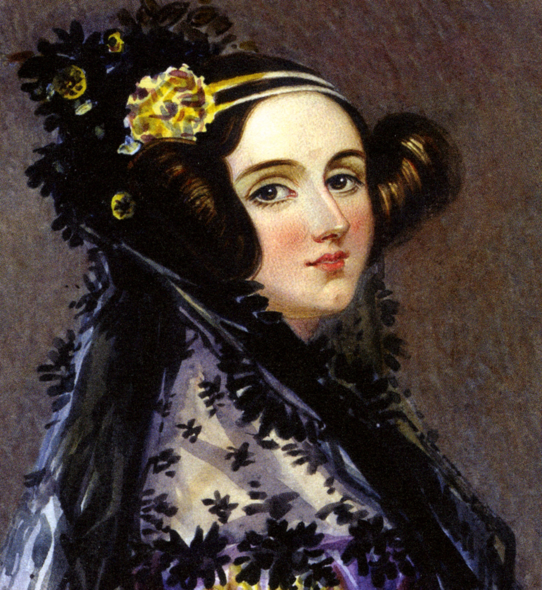

Ada Lovelace
Ada Lovelace fue una matematica y escritora britanica, conocida por su trabajo en la maquina analitica de Charles Babbage
Es considerada una de las primeras personas en desarrollar un algoritmo para ser procesado por una maquina, sentando las bases de la programacion moderna.
A pesar de las dificultades de su tiempo, su trabajo sigue siendo inspirador para generaciones de cientificos y matematicos.
Hitos importantes:
- Nacimiento en 1815.
- Colaboracion con Charles Babbage en 1833.
- Publicacion de sus notas sobre la maquina analitica en 1843.